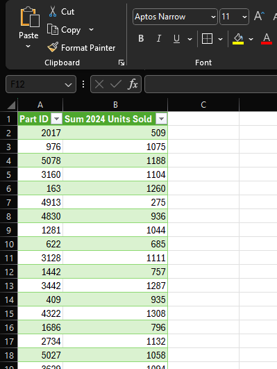
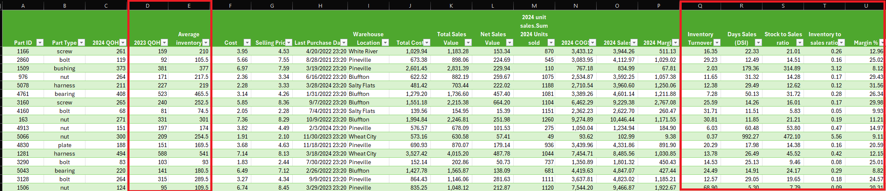

Inventory Analysis with Excel Power Query and Tableau
Let's assume a component distributor wants to obtain key metrics regarding their inventory balances. The distributor sells various nuts, bolts, screws, bearings, bushings, plates, mounts and harnesses. None of the inventory is consumed in WIP, the distributor simply buys and sells finished goods.
Data will need to be pulled from multiple files - one containing inventory data and one containing detailed part sales data. Our task is to group the inventory data by category, calculate key inventory ratios/metrics, determine if there is aged inventory subject to recording an allowance, pinpoint which warehouses have the slowest moving inventory, and display this information in Tableau.
-
Step 0: Obtain data for Power Query
Two excel files containing inventory and sales data were obtained (inventory_database.xlxs and parts_sales_detail.xlxs). The files were pre-cleaned and contain complete/accurate data. The files:

Total cost and sales value attributable to each part ID were added as columns using the Power Query Editor. We will further combine and transform the data as we proceed through the steps:

-
Step 1: Group inventory by category
A simple pivot table on the queried data shows us the inventory by category, as well as location:

-
Step 2: Calculate key inventory ratios and metrics
To start, we will find - inventory turnover, days sales in inventory, stock to sales, and inventory to sales ratio. Along the way, we will try to identify other metrics that might be beneficial to our analysis and decision making.
Here is a summary of our basic ratio calculations:
- Inventory turnover = COGS / average inventory
- Days sales in inventory = (average inventory / COGS) X number of days
- Stock to sales ratio = average inventory / net sales value
- Inventory to sales ratio = ending inventory / sales
First, using Power Query Editor, the part sales data file was transformed. Since we only care about 2024 sales, the sales were filtered for only items with a sale date in 2024. Once filtered, the data was grouped by part ID to summarize total units sold by part ID. Now a new 2024 unit sales worksheet was generated and looks like this:
The 2024 unit sales data was then merged with our inventory data. Since our inventory data file contained unit cost and selling price, columns were added to calculate total 2024 COGS, sales, and margins per part ID.

One additional set of data needed to complete our ratio analysis is the historical quantities on hand. We're assuming this is an analysis performed at year-end 2024, therefore, we will calculate average inventory using 12/31/2024 and 12/31/2023 inventory quantities. A 2023 inventory database was obtained and the 2023 QOH's were added to each part ID in our inventory database.
After adding the 2023 quantities, we are ready to begin our ratio calculations. Columns were added to show our ratios by part ID:
From this point, we can simply Pivot our table to obtain relevant information regarding our ratios. By part type:

By part type, filtered for the Pineville location:

By location, by part type:

To take it a step further and identify other relevant information regarding the inventory data, let's find part IDs that are high turnover, high margin items. Below we can see part IDs 1489, 1239, 1434, 3158 each have fantastic turnover and high margins (threshold set at minimum 250 turns). However, part IDs 2588, 3245, 1073 have high turnover, but less than 15% margins.

Let's look at the opposite - low turnover, low margin part IDs. Below we can see a number of part IDs that have slow turns and less than 15% margins. Maybe it's not even worth stocking these parts anymore? We also see a number of part IDs that have slow turns but very positive margins (30%+). Maybe it would be prudent to lower the selling prices on these parts to approx. 20-25% margins to generate higher volume and turns?

One thing to note regarding the inventory data is the exclusion of items still in inventory that had zero sales activity in 2024. These values were filtered out for the analysis and will be addressed in a subsequent step where we look at slow moving inventory subject to creating an allowance in the accounting records.